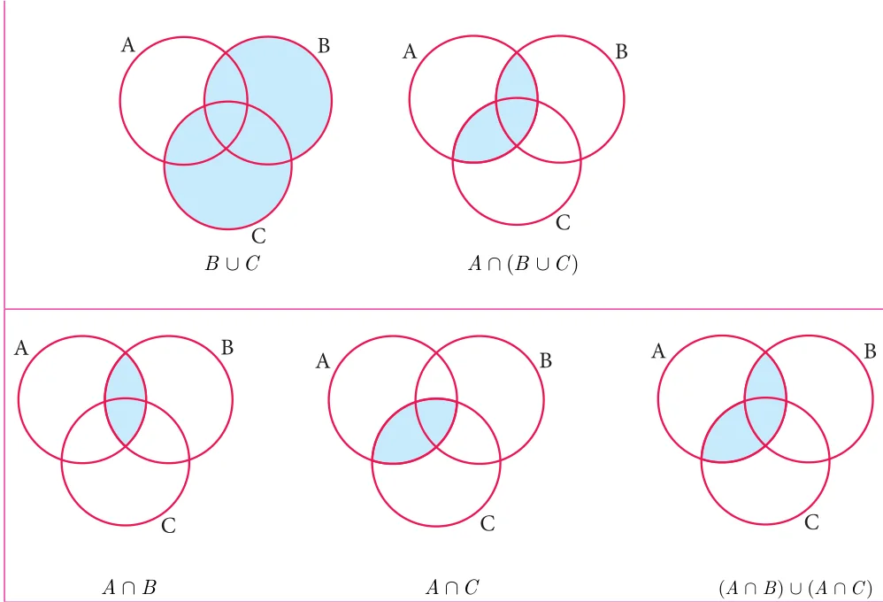

In lower classes, we have studied distributive property of multiplication over addition on numbers. That is, \(a \times\) (b \(+c) =\) (a \(\times\) b) \(+(a \times\) c). In the same way we can define distributive properties on sets.
Distributive property: For any three sets A, B and C
- (i)\(A \cap\) (B \(\cup\) C) = (A \(\cap\) B) \(\cup\) (A \(\cap\) C) [Intersection over union]
- (ii)\(A \cup\) (B \(\cap\) C) = (A \(\cup\) B) \(\cap\) (A \(\cup\) C) [Union over intersection]
Example 1.21
If \(A = {0 2\), \(,4,6,8},B ={x\) : x is a prime number and \(x < 11}\) and
\(C =\) {x : x Î N and \(5 \le x < 9}\) then verify \(A \cup\) (B \(\cap\) C) = (A \(\cup\) B) \(\cap\) (A \(\cup\) C).
Solution
Given \(A = {0 2\), ,4,6,8}, \(B = {2,3,5,7}\) and \(C = {5,6,7,8}\) First, we find B ÇC \(= {5,7}\) , \(A \cup\) (B \(\cap\) C) \(= {0 2\), ,4,5, 6,7,8} ... (1)
Next, A È \(B = {0 2\), ,3,4,5,6,7,8}, A ÈC \(= {0 2\), ,4,5,6,7,8} Then, (A \(\cup\) B) \(\cap\) (A \(\cup\) C) \(= {0 2\), ,4,5,6,7,8} ... (2)
From (1) and (2), it is verified that \(A \cup\) (B \(\cap\) C) = (A \(\cup\) B) \(\cap\) (A \(\cup\) C).

Verify \(A \cap\) (B \(\cup\) C) = (A \(\cap\) B) \(\cup\) (A \(\cap\) C) using Venn diagrams.
Solution

From (1) and (2), \(A \cap\) (B \(\cup\) C) = (A \(\cap\) B) \(\cup\) (A \(\cap\) C) is verified.